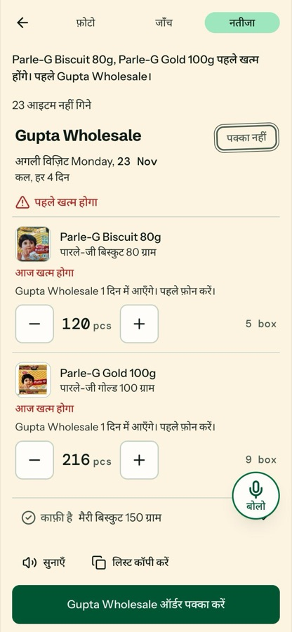
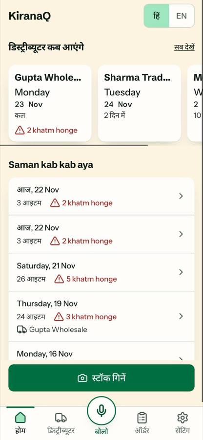
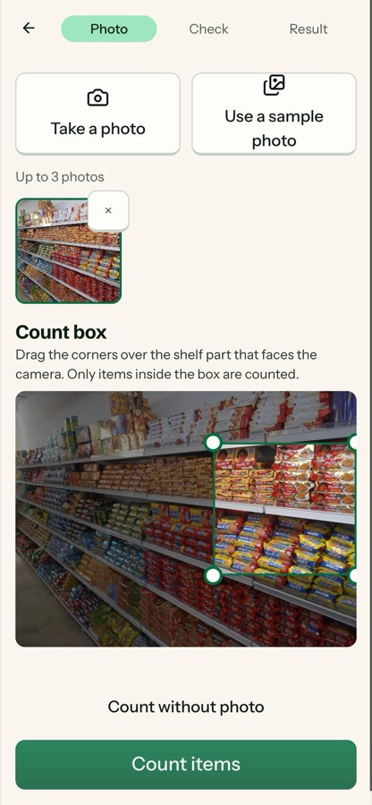
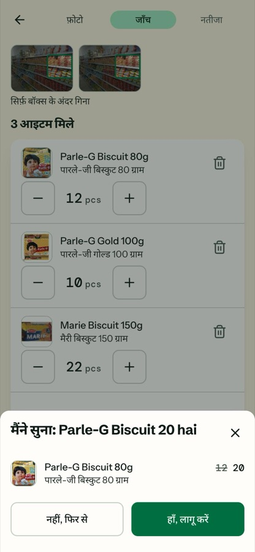

A kirana owner does not know what is left on the shelf. KiranaQ counts it from one photo.
For kirana owners with no POS and no bills. Take a shelf photo. Fix the count by voice in Hindi or Hinglish. KiranaQ learns how fast each item sells and tells you, per distributor, what to order at the next visit and what runs out before that visit.

How it works
Four steps. About a minute per stock log. No bill, no sale entry.
-
1

Photo of the shelf
Tap “Stock ginen” and take a photo, or choose a photo.
-
2

Count box
Drag the box over the part that faces the camera. The vision model counts only inside the box.
-
3

Voice check
Say “Maggi 8 hai”. The app shows what it heard and changes the count only after you say yes.
-
4
Order per distributor
One card per distributor: what runs out before the next visit (“call early”) and what to order.
From two or more logs: sales rate = (stock before + delivered − stock now) ÷ days. A restock photo shows which items went up, and the app asks which distributor delivered.
How KiranaQ is different
Billing apps track stock from sale and purchase entries. A kirana owner with no POS does not make those entries. KiranaQ needs a photo and a short voice check.
| Vyapar | Khatabook | KiranaQ | |
|---|---|---|---|
| Input needed | Bills and sale entries | Ledger, bills and sale entries | Shelf photo and a short voice check |
| Learns demand without sales data | No. Uses past sales | No (not confirmed) | Yes. From successive stock logs |
| Visit cycle per distributor, “call early” alert | Not found. Alert at a minimum level the owner sets | Not found. Low-stock alerts only | Yes. One card per distributor |
| Restock detection | Purchase entry by hand | Purchase entry by hand | From a restock photo |
| Voice in Hindi or Hinglish | None stated | Hindi screens listed. Voice: none stated | Yes (Sarvam speech) |
| Works with no POS or bills | No. Stock follows entries | Ledger works alone. The stock part sits beside billing | Yes |
Source: public pages and Play Store listings, read 22 Nov 2026 (research/competitive.md). “Not found” means we did not see the feature in public pages. It does not prove the feature is absent.
Where they are stronger
GST invoicing, accounting, a credit ledger (udhaar) for customers, apps on many devices, mature support, and proven scale: Vyapar 1Cr+ and Khatabook 10Cr+ Play Store downloads. KiranaQ is a proof of concept. Photo counts can be wrong, and sales rates need two or more logs. It does not make bills, does not do GST, and does not track customer credit.
Technical architecture
One Node process serves the API and the web app. The order rule is plain code with named settings, so every number has a reason line.
Business model: demand-side data
The app stays free for the store owner. Revenue comes from what the stock logs show about demand.
-
Store owner
Takes stock logs for free. Gets orders per distributor and “call early” alerts.
-
Demand signal
Each log shows what sells, in which neighbourhood store, how fast, and from which distributor.
-
Brands and distributor companies
Buy aggregated, anonymised demand insights.
Launch tracking
Does a new product reach neighbourhood stores, and how fast does it sell there?
Stock-outs
Which items run out, in which areas, before the distributor comes back?
Reorder timing
When will stores on a route need stock, so the visit plan fits the real sales rate?
Consent and privacy. The owner opts in. Data is shared only as aggregates across stores, never as one store’s numbers. No personal data is collected.
What we checked
Real results from our checks on 22 Nov 2026, with real Sarvam calls. Small samples: 20 phrases and 3 photos.
- Server tests
- 99/99 pass
- Demo check
- 15 checks pass
- Voice parse (E2)
- 16/16 clear phrases exact. 4/4 unclear phrases ask again, no guess
- Vision count (E1)
- Precision 1.00, recall 1.00. Counts within ±20% or ±1 pack: 0.80
- Live Sarvam smoke
- Speech to text, text to speech, parse and vision: all ok
See the demo
Five steps with screenshots. Then try the live app in the same phone frame.